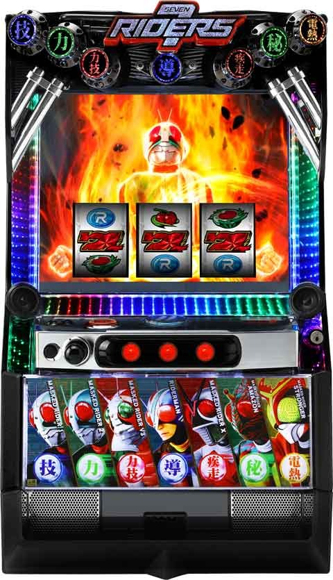

L仮面ライダー 7RIDERS

 狙い目
狙い目
[リセット狙い]
目安250Gから
2周期目 350ptから
不問は280Gから
[ボーナス間天井狙い]
750Gから(撃破pt0から)
G数より周期の進み具合や撃破ptの兼ね合いで狙う感じになりそう。
撃破ptが進んでいればボーダー下げれそう。
[撃破ポイント狙い]
1周期目は200か400ptで規定ポイント到達。
3周期目はチャンス周期？
1周期目 150pt
それ以外 750pt
[周期天井狙い]
6周期300ptから
[ライダー狙い]
ストロンガー 0ptから
V3 200-300ptボーダー下げる？
ライダー4人以上 0ptから？
[有利切れ狙い]
同一有利区間内0から差枚2100枚以上の場合1周期消化まで？
※0から差枚2400枚で有利切れると想定されるが、一撃2400枚以上で差枚プラス時にも有利切れるため、ほとんど落ちてなさそう？
やめ時
AT終了後状態を確認してやめ。
1周期目速攻モードなら1周期消化？示唆は不明。
有利切れ後は必ず1周期消化。
その他
メニュー画面
{kind=link}
各ライダーの特徴

参考元
基本情報
- メーカー: 京楽
- 機械割: 97.6% 〜 111.9%
- 導入開始日: 2024年01月09日（火）
- ゲーム性概要: 通常時は周期抽選からATを目指すゲーム性で、規定撃破ポイントを貯めると周期に到達。 ATはバトルタイプで、おもにベルやレア役時にボス幹部へダメージを与え、最終的に撃破できれば報酬（ゲーム数）を獲得して次セットに継続する。初戦は平均期待度50%だが、2戦目以降は平均期待度77%となるため、いかに初戦を突破できるかが重要となる。 獲得枚数2400枚などを契機に突入する上位AT「バトルラッシュ極」は勝利期待度が約84%と高く、上限枚数まで行けば再び前兆を経由してバトルラッシュ極に突入する。


打ち方
打ち方・小役
打ち方（小役狙い）
［最初に狙う絵柄］ 左リール上段付近にBARを目押し。

［BAR下段停止時］ 成立役：ハズレorリプレイor共通ベルor弱チャンス目 共通ベルは3枚と8枚の2種類がある（詳細は停止形参照）

［角チェリー停止時］ 成立役：弱チェリーor強チェリー

［スイカ上段停止時］ 成立役：スイカor強チャンス目 中リールはBARがスイカの代用になるので中＆右リールフリー打ちでOKだ。

［レア役の停止形］ ※下段3連チェリーも強チェリー

［ベルの停止形］

変則押しはNG
通常時は基本的に左1stで消化しよう。

解析情報通常時
小役関連
小役確率
| 役 | 確率 |
|---|---|
| リプレイ | 1/7.3 |
| 押し順ベル（こぼし込み） | 1/1.9 |
| 8枚ベル（設定1） | 1/131.1 |
| 3枚ベル（設定1） | 1/16.8 |
| 弱チェリー | 1/84.7 |
| 強チェリー | 1/256.0 |
| 中段チェリー | 1/4096.0 |
| スイカ | 1/89.9 |
| 弱チャンス目 | 1/199.8 |
| 強チャンス目 | 1/399.6 |
モード
速攻モード
1周期目にのみ突入する可能性がある高期待度モードで、周期到達時のAT期待度は 約70% 。エンディング後や完走後に突入する速攻モード極は1周期目でのAT当選が確定する。
［速攻モード］ 通常時にあおりを経て告知される可能性がある。

［速攻モード極］

周期抽選（撃破ポイント）
周期抽選概要
まず、周期開始時に主人公のライダーを決定。その後、 撃破ポイントを規定数貯めると周期抽選が発生 （周期抽選に成功するとAT）。周期抽選までは、仲間ライダーを集めて周期抽選の期待度をアップさせていくのが基本的なゲーム性だ。 通常時は常に8G分のマスが表示されていて、マスと成立役に応じて撃破ポイント獲得を抽選。仲間ライダー参戦を示唆するマスなども存在する。
規定撃破ポイント
| パターン | 備考 |
|---|---|
| 規定ポイント | 200or400or600or800or1000pt |
| 備考 | 1周期目は200or400ptで周期到達 |
| 備考 | 3周期目はチャンス |
| 備考 | 2周期目移行は高設定ほどAT期待度アップ |
［通常時］主人公＆仲間ライダーの性能
| ライダー | 性能 |
|---|---|
| 1号 | 幹部バトル中にベルが揃えば勝利書き換えを抽選 |
| 2号 | 幹部バトル中にリプレイが揃えば 勝利書き換えを抽選 |
| V3 | 幹部バトル中にベルorリプレイが揃えば 勝利書き換えを抽選 |
| ライダーマン | 次周期の主人公がV3になるかも!? |
| アマゾン | 毎ゲームAT直撃を抽選 |
| X | 獲得する撃破ポイントが2倍 |
| ストロンガー | 周期到達でAT確定（幹部バトル勝利）、 AT継続率アップ |
マスの特徴
| マス | 特徴 |
|---|---|
| ブランク | イベント期待度：低 |
| ？ | イベント期待度：中 |
| ！ | イベント期待度：高 |
| カード | 出現カードで様々な内容を示唆 |
| 撃破 | 撃破ポイント獲得かつ 青＜緑＜赤＜紫の順で獲得ポイントが多い |
| 参戦 | 仲間ライダー参戦のチャンス、 青＜緑＜赤の順で参戦期待度アップ |
| ゆい | ゆいたいむに突入するかも!? |
| 潜入ジャッジ | 潜入ゾーン（周期抽選）突入のジャッジへ、 青＜黄＜緑＜白・赤の順で周期到達期待度アップ |
［撃破ポイントの貯め方］ マスに応じた抽選だけでなく、撃破ポイントの特化ゾーン（ゆいたいむ）も存在する

［主人公＆仲間ライダー］ ライダーごとに特性があり、基本的に数が多くなるほど周期到達時のAT期待度がアップ。仲間のライダーが5人以上なら周期到達＝AT確定、全員集合（7人）するとフリーズが発生してバトルラッシュ極に突入する。

［潜入ゾーン突入＝周期抽選］ 撃破ポイントを貯めて、潜入ゾーンに突入すれば周期抽選。成功すればAT、失敗すると次の周期へ移行する。

1周期目の規定撃破ポイント振り分け
| 規定撃破ポイント | 振り分け |
|---|---|
| 200pt | 10.5% |
| 400pt | 89.5% |
1周期目は必ず200or400ptで周期抽選に到達する。
［潜入ジャッジで告知］ 潜入ジャッジ（連続演出）が成功すれば潜入ゾーン突入＝周期抽選到達となる。

周期抽選中の書き換え抽選
潜入ゾーンのラストに発展する幹部バトル（連続演出）中は参戦ライダー（1号・2号・V3）に対応した役だけではなく、レア役でも書き換えを抽選。 弱レア役ならチャンス、強レア役なら勝利確定 となる。
幹部バトル中の勝利書き換え
| 役 | 抽選 |
|---|---|
| ベル揃い | 1号・V3参戦中に抽選 |
| リプレイ | 2号・V3参戦中に抽選 |
| 弱レア役 | 書き換えのチャンス |
| 強レア役 | 勝利確定 |
幹部バトル中のレア役は期待大！

主人公ライダー選択率
周期終了後に前回の主人公を参照して、新たな主人公ライダーを抽選。AT終了時や設定変更（リセット）後は前回の主人公不問で抽選される。
主人公ライダー振り分け
| 今回の主人公 | 前回の主人公 | |||
|---|---|---|---|---|
| 今回の主人公 | リセットなど | 1号 | 2号 | V3 |
| 1号 | 28.6% | － | 41.0% | 34.4% |
| 2号 | 17.4% | 23.4% | － | 15.6% |
| V3 | 0.5% | 0.4% | 0.4% | － |
| ライダーマン | 3.4% | 3.9% | 3.1% | 2.7% |
| アマゾン | 26.8% | 40.6% | 31.3% | 26.6% |
| X | 22.9% | 31.3% | 23.8% | 20.3% |
| ストロンガー | 0.4% | 0.4% | 0.4% | 0.4% |
| 今回の主人公 | 前回の主人公 | |||
| 今回の主人公 | ライダーマン | アマゾン | X | ストロンガー |
| 1号 | 30.1% | 47.7% | 43.8% | － |
| 2号 | 13.3% | 20.7% | 19.1% | － |
| V3 | 15.6% | 0.4% | 0.4% | － |
| ライダーマン | － | 3.5% | 3.1% | － |
| アマゾン | 23.0% | － | 33.2% | － |
| X | 17.6% | 27.3% | － | － |
| ストロンガー | 0.4% | 0.4% | 0.4% | － |
※リセット時など…設定変更後・AT終了後・有利区間移行時
ライダーレベル
周期開始時に6段階のライダーレベルを決定。段階によって周期抽選の成功期待度が変化する。 レベルは設定に応じて抽選され、高設定ほど上位レベルが選ばれやすい。
周期回数ごとのAT期待度（設定1）
| 周期 | 期待度 |
|---|---|
| 1周期目 | 42.1% |
| 2周期目 | 36.1% |
| 3周期目 | 48.3% |
| 4周期目 | 29.6% |
| 5周期目 | 33.2% |
| 6周期目 | 40.4% |
| 7周期目 | 100%（天井） |
※書き換えなどを含んだ平均値
周期ごとの当選率は基本的に高設定ほど高い。 3周期以内に当選する割合は約80%だ。
ゆいたいむ
ゆいたいむ概要

おもにレア役で抽選される撃破ポイント獲得の特化ゾーン。5G間、成立役に応じて毎ゲーム撃破ポイントを獲得する（平均85pt）。突入時のタイトルは青がデフォルト、赤なら大量ポイント獲得のチャンスだ。
ゆいたいむ性能
| 項目 | 内容 |
|---|---|
| 当選契機 | レア役など |
| 継続ゲーム数 | 5G |
| 平均獲得撃破ポイント | 85pt |
獲得する平均撃破ポイント
| 設定 | X非参戦中 | X参戦中 |
|---|---|---|
| 1 | 85.1pt | 130.2pt |
| 2 | 85.0pt | 130.2pt |
| 4 | 84.9pt | 130.2pt |
| 5 | 84.8pt | 130.2pt |
| 6 | 84.7pt | 130.2pt |
［青タイトル］

［赤タイトル］

怒りポイント
怒りポイント概要
幹部バトル敗北時やATバトル敗北（終了）時などに貯まるポイントで、 MAX（100pt)になるとAT終了時に速攻モード極 に突入。初期ポイントは有利区間移行時の成立役に応じて抽選される。
怒りポイント獲得時＆蓄積示唆時のエフェクト
| エフェクト | 獲得時 | 蓄積示唆時 |
|---|---|---|
| 白 | ＋5pt | 69pt以下 |
| 青 | ＋10pt | 70pt以上 |
| 緑 | ＋40pt | 90pt以上 |
| 赤 | ＋50pt | 95pt以上 |
［怒りポイントの示唆］


［AT終了時のあおり］

怒り文字の色が赤ならチャンス！
怒りポイント獲得抽選
周期開始時、設定に応じてライダーレベルを抽選。レベルに応じて周期ごとのAT期待度だけでなく、AT駆け抜け時に獲得できる怒りポイントの振り分けも変化する。
初期怒りポイント振り分け（有利区間移行時）
| ポイント | その他 | 弱レア役 | 強レア役 | 中段チェリー |
|---|---|---|---|---|
| 0pt | 8.0% | 4.0% | － | － |
| 10pt | 12.0% | 10.0% | － | － |
| 30pt | 20.0% | 12.0% | － | － |
| 50pt | 21.0% | 12.0% | － | － |
| 70pt | 21.0% | 12.0% | － | － |
| 90pt | 18.0% | 49.2% | 94.6% | － |
| 95pt | － | 0.4% | 5.0% | － |
| 100pt | － | 0.4% | 0.4% | 100% |
レアパターンだが、 朝イチ（設定変更後）1G目に強レア役を引いた場合は、90pt以上が確定 するためAT当選まで続行したい。設定変更時はマップ解放時に撃破ポイントが0ptになっているのでひと目で判別できる。
AT初戦敗北時（駆け抜け時）の怒りポイント振り分け
| ポイント | ライダーレベル1～5 | ライダーレベル6 |
|---|---|---|
| 0pt | 58.8pt | 38.4pt |
| 5pt | 38.0pt | 35.0pt |
| 10pt | 2.4pt | 25.0pt |
| 40pt | 0.4pt | 1.2pt |
| 50pt | 0.4pt | 0.4pt |
演出動画
極フリーズ
中段チェリー成立時の一部で発生。バトルラッシュ超極に直行する強力フラグとなっている。
フリーズ
ロングフリーズ
中段チェリーの約1/8で発生（フリーズは中段チェリー成立の次ゲーム）。バトルラッシュ極orバトルラッシュ超極が確定する。 ムービーがライダーver.ならバトルラッシュ極、怪人ver.ならバトルラッシュ超極に!?

ロングフリーズ性能
| 項目 | 内容 |
|---|---|
| 発生契機 | 中段チェリーの約1/8 |
| 発生確率 | 約1/30533 |
| 恩恵 | バトルラッシュ極 or バトルラッシュ超極 |
恩恵振り分け
| 恩恵（ムービー） | 振り分け |
|---|---|
| バトルラッシュ極（ライダーver.） | 約87% |
| バトルラッシュ超極（怪人ver.） | 約13% |
［ライダーver.］

［怪人ver.］

その他
初当り契機
| パターン | 備考 |
|---|---|
| 周期抽選 | 規定ポイント到達時の周期抽選で当選 |
| 中段チェリー | AT直撃（ロングフリーズのチャンス） |
| 仲間ライダー全員集合（7人） | バトルラッシュ極直行 |
| アマゾンの特性発動 | 特性が発動すればAT直撃 |
| ゲーム数天井 | 前兆を経てATへ突入 |
| 周期天井 | 周期終了後にATへ突入 |
解析情報ボーナス時
バトルラッシュ（AT）
バトルラッシュ概要
セット管理のバトル型ATで、平均継続率50％の初戦（初回セット）さえ突破すれば、以降は平均継続率が77%にアップ。 消化中はベルやレア役で敵のHPを削っていき、見事撃破できれば次セットへ継続する。 ベルは約40%で攻撃、レア役は攻撃濃厚だ。

バトルラッシュ（AT）性能
| 項目 | 内容 |
|---|---|
| 突入契機 | 周期抽選突破、各種直撃など |
| 1Gあたりの純増 | 約2.6枚 |
| 継続ゲーム数 | 30G＋α（初戦は20G＋α） |
| 継続率 | 約77（初戦は約50%） |
| 消化中の抽選 | 敵へのダメージ、仲間ライダー参戦 |
| 勝利条件 | 敵のHPを0にする |
［初戦はエンペラーダークと対戦］ 平均継続率は50％。

［2戦目以降は対戦相手で期待度変化］ 大十面鬼＜メカ地獄大使＜闇の１号＜闇のストロンガー＜闇のライダーマン＜ショッカー戦闘員の順で期待度がアップする。

攻撃パターン
攻撃には通常攻撃と特殊攻撃が存在。さらにベルカウンターがMAXになるとベル成立攻撃確定となる。 特殊攻撃は数ゲーム間に渡る攻撃で、敵に大ダメージを与えるチャンスだ。
［通常攻撃］

［特殊攻撃：ライダーコンボ］

［特殊攻撃：ベルトチャージ］

［ベルカウンター］ ベルを連続で引くたびに点灯。ベル以外を引くとリセットされるが、レア役時はリセットされない。

絆ホールド当選率・人数別の継続期待度
絆ホールドは、バトル勝利後（キャラ紹介ムービー表示中）にホールドしている人数と成立役に応じて抽選。もちろん人数が増えるほどATは継続しやすい。 6人集まればAT終了時に必ず速攻モード極に移行 する。
絆ホールド当選率
| ホールド | ベル | 弱レア役 | 強レア役 | 中段チェリー |
|---|---|---|---|---|
| 1人目 | 0.7% | 19.2% | 50.8% | 100% |
| 2人目 | 0.4% | 18.4% | 50.8% | 100% |
| 3人目 | 0.3% | 18.1% | 50.8% | 100% |
| 4人目 | 0.3% | 17.2% | 50.8% | 100% |
| 5人目 | 0.1% | 1.6% | 4.6% | 100% |
| 6人目 | － | － | － | 100% |
絆ホールド人数別・AT継続期待度
| 人数 | 継続期待度 |
|---|---|
| 1人 | 80.5% |
| 2人 | 88.1% |
| 3人 | 92.8% |
| 4人 | 94.0% |
| 5人 | 95.9% |
| 6人 | 96.1% |
AT初戦敗北のスルー回数天井
AT初戦敗北の連続回数には天井があり、最大5回でVストック（初戦勝利）を獲得できる。
初戦連続敗北回数ごとのVストック当選率
| 回数 | 当選率 |
|---|---|
| 0回 | 5.9% |
| 1回 | 7.0% |
| 2回 | 12.8% |
| 3回 | 27.4% |
| 4回 | 54.6% |
| 5回 | 100% |
AT中のゆいたいむ
ゆいたいむ概要

AT中のゆいたいむは撃破ポイントではなく、毎ゲーム敵へのダメージを抽選（ゆいが様々な兵器で攻撃）。滞在中はゲーム数の減算がストップする。
AT中ゆいたいむの性能
| 項目 | 内容 |
|---|---|
| 突入契機 | 中押しカットイン成功（サンド目停止） |
| 突入確率 | 1/692.0 |
| 継続ゲーム数 | 5 or 10G |
| 消化中の抽選 | 毎ゲーム成立役に応じてダメージ抽選 |
| その他 | 滞在中はATゲーム数の減算がストップ |
継続ゲーム数振り分け
| ゲーム数 | 振り分け |
|---|---|
| 5G | 98.0% |
| 10G | 2.0% |

突入契機はサンド目狙え。見事サンド目が停止すればゆいたいむに突入する。
中押しカットイン確率＆成功期待度
| 項目 | ゆいカットイン | まいカットイン |
|---|---|---|
| 発生確率 | 1/432.7 | 1/1724.4 |
| 成功期待度 | 約37% | 100% |
レバーON時ではなくリール回転開始時に発生すればゆいでも成功濃厚。まいカットインは発生した時点で成功濃厚となる。
［ゆいカットイン］

［まいカットイン］

AT中の仲間ライダー
仲間ライダーの特性
通常時と同じく、参戦中は抽選で恩恵を受けることが可能。AT継続時に恩恵として常時選ばれたライダーが参戦する「絆ホールド」状態になることもある。基本的にセットごとに仲間ライダーは解散するが、絆ホールド時はATが終了するまで参戦し続ける。

［AT中］主人公＆仲間ライダーの性能
| ライダー | 性能 |
|---|---|
| 1号 | ベル入賞時に大ダメージ抽選（ライダーキック） |
| 2号 | 報酬チャンス時に追加上乗せ抽選 |
| V3 | 1号・2号両方の性能を所持 |
| ライダーマン | 全役で5G間の仲間参戦高確状態移行を抽選 |
| アマゾン | レア役で一撃勝利抽選 |
| X | レア役時に３or5or7G間追撃上乗せ状態へ移行 |
| ストロンガー | 報酬チャンスが超報酬チャンスに昇格 |
※恩恵を受けられるのはすべて発動抽選に当選した場合のみ
［特性は抽選で発動］ 参戦していれば常に恩恵を受けられるわけではない。抽選に当選した場合のみ特性が発動する。

［絆ホールド］ AT継続時の恩恵などで絆ホールドされれば、AT終了までホールドされた仲間が参戦する。

フルスロットルルーレット
フルスロットルルーレット概要
ATセット継続時に移行する、いわゆる報酬獲得ゾーンで、成立役と仲間ライダーの数に応じてメーター増加を抽選。 メーターがMAXになるとルーレットで報酬を獲得できる 。 基本的にフルスロットルルーレット終了後は「報酬チャンス」で次セットのゲーム数を決めるが、ここで「超報酬チャンス」を獲得すれば大量ゲーム数上乗せの期待大だ。

メーターMAX時の報酬
| 報酬 | 恩恵 |
|---|---|
| ゲーム数上乗せ | ＋10～20G |
| 絆ホールド | 仲間ライダーを1人を絆ホールドする |
| 超報酬チャンス | 超報酬チャンスへ移行 |
| 限界突破 | 限界突破が発動（AT性能アップ） |
| ショッカー戦闘員 | 次セットの対戦相手が戦闘員＝セット継続確定 |
［超報酬チャンス］

［ゲーム数上乗せ］

［限界突破］

［絆ホールド］

［ショッカー戦闘員］

メーター振り分け
| 参戦人数 | 5pt | 10pt | 20pt | 50pt | 100pt |
|---|---|---|---|---|---|
| 1人 | 97.6% | 2.0% | 0.4% | － | － |
| 2人 | 86.0% | 12.0% | 2.0% | － | － |
| 3人 | － | 97.6% | 2.0% | 0.4% | － |
| 4人 | － | 86.0% | 12.0% | 2.0% | － |
| 5人 | － | － | 94.6% | 5.0% | 0.4% |
| 6人 | － | － | － | 95.0% | 5.0% |
| 7人 | － | － | － | 95.0% | 5.0% |
バトル勝利後の最終ゲームで、参戦しているライダーの数を参照してメーター獲得を抽選。100ptになるとMAXになり、フルスロットルルーレットが発生する。
［非限界突破中］報酬振り分け
| 報酬 | その他 | 弱レア役 | 強レア役 | 中段 チェリー |
|---|---|---|---|---|
| ゲーム数上乗せ | 64.2% | － | － | － |
| 絆ホールド | 33.0% | 80.0% | 50.0% | － |
| 超報酬チャンス | 2.4% | 15.0% | 25.0% | － |
| 限界突破 | － | 5.0% | 25.0% | 100% |
| ショッカー戦闘員 | － | － | － | － |
［限界突破中］報酬振り分け
| 報酬 | その他 | 弱レア役 | 強レア役 | 中段 チェリー |
|---|---|---|---|---|
| ゲーム数上乗せ | 64.2% | － | － | － |
| 絆ホールド | 33.0% | 80.0% | 50.0% | － |
| 超報酬チャンス | 2.4% | 15.0% | 25.0% | － |
| 限界突破 | － | － | － | － |
| ショッカー戦闘員 | － | 5.0% | 25.0% | 100% |
限界突破中は非限界突破中の限界突破の分すべてがショッカー戦闘員（次セット継続確定）に振り分けられる。
報酬チャンス
報酬チャンス概要
AT継続時に移行する次セットのゲーム数決定ゾーン。3G間毎ゲームが上乗せされ、ベルやレア役時はゲーム数が優遇される。 2種類の告知パターン（レッツゴーライダータイムorゆいまい上乗せ）を任意に選択できる。

報酬チャンス性能
| 項目 | 恩恵 |
|---|---|
| 移行契機 | ATセット継続時 |
| 継続ゲーム数 | 3G |
| 平均上乗せ | 44.2G（超報酬チャンスは62.9G） |
| 消化中の抽選 | 成立役に応じて上乗せゲーム数を抽選 |
［レッツゴーライダータイム］ 毎ゲーム上乗せしたゲーム数が表示される。

［ゆいまい上乗せ］ 後告知タイプで、3G目に上乗せゲーム数がまとめて告知される。

上乗せゲーム数振り分け
毎ゲーム成立役に応じて上乗せゲーム数を抽選。別途「端数上乗せ」という追加上乗せが抽選され、当選した場合はゲーム数が加算される（上乗せ15Gで追加4Gの場合は19Gが告知）。
［通常の報酬チャンス］上乗せゲーム数振り分け
| 報酬 | その他 | ベル | 弱レア役 | 強レア役 |
|---|---|---|---|---|
| ＋10G | 96.3% | － | － | － |
| ＋15G | 2.5% | 90.8% | － | － |
| ＋20G | 0.9% | 6.6% | 91.7% | － |
| ＋25G | 0.1% | 2.1% | 6.4% | 27.2% |
| ＋30G | 0.1% | 0.3% | 1.6% | 68.5% |
| ＋35G以上 | 0.1% | 0.2% | 0.3% | 4.3% |
［超報酬チャンス］上乗せゲーム数振り分け
| 報酬 | その他 | ベル | 弱レア役 | 強レア役 |
|---|---|---|---|---|
| ＋10G | － | － | － | － |
| ＋15G | 91.1% | － | － | － |
| ＋20G | 5.2% | 74.5% | － | － |
| ＋25G | 1.8% | 19.2% | 32.2% | － |
| ＋30G | 0.4% | 4.2% | 57.2% | 89.3% |
| ＋35G以上 | 1.5% | 2.0% | 10.7% | 10.7% |
限界突破
限界突破概要

仲間ライダーの参戦頻度や攻撃時のダメージ量など、あらゆる面が優遇された上位AT。AT終了まで継続する。
限界突破当選契機
| No. | 契機 |
|---|---|
| 1 | ストロンガー参戦時の抽選に当選 |
| 2 | フルスロットルルーレットの報酬 |
| 3 | ATセット継続（バトル勝利）時の約1/256 |
| 4 | ロングフリーズ |
| 5 | 速攻極モードでの引き戻し時 |
バトルラッシュ極
バトルラッシュ極概要
初戦から限界突破状態かつ、初戦勝利が確定している状態。ロングフリーズの一部で突入するバトルラッシュ超極なら7戦勝利確定＋限界突破状態となる。
［バトルラッシュ極］

［バトルラッシュ超極］

バトルラッシュ（超）極当選契機
| No. | 契機 |
|---|---|
| 1 | ロングフリーズ |
| 2 | 速攻極モードでの引き戻し時 |
デンジャーゾーン
デンジャーゾーン概要
ATの残りゲーム数が0になるかつ、敵を撃破できていない場合に突入する状態で、リプレイ成立時の一部で終了（通常時へ）。滞在中はAT中と同じく攻撃抽選がおこなわれる。

エンディング
エンディングボーナス概要
差枚2300枚到達時に発生するボーナスで、どの状況でも条件を満たした時点で突入。終了後は「速攻モード極」に突入する。

演出情報
通常時
作戦区域セリフ演出の周期突破期待度
| キャラ | セリフ | 期待度 |
|---|---|---|
| ゆい | 今回のイベントは期待出来そうです | 約35% |
| まい | こ、これは期待出来そうね | 約80% |
| まい | こ、これは熱いかも！ | 約90% |
| まい | こ、これは激熱ね！！ | 突破濃厚 |
通常時の演出法則
| パターン | 法則 |
|---|---|
| 速攻モードあおりが3連続で発生 | 速攻モード突入 |
| 「アクション演出」がリール回転開始時に発生 | 撃破ポイント大量獲得 |
| 「主人公ライダー演出」で ブランクor？or！マス時に弱レア役成立 | 周期突破濃厚 |
| 「主人公ライダー演出」が PTor参戦or袋or前兆orゆいマス時に発生 | 中段チェリー濃厚 |
| 「決めセリフ演出」で ブランクor？or！マス時にハズレor弱レア役成立 | 周期突破濃厚 |
| 「ゆいルーレット演出」が 参戦orカードor前兆orゆいマス時に発生 | 中段チェリー濃厚 |
| ゆいアクション演出の拍手 | 周期突破濃厚 |
| ジャッジマスが見えている区間で 仲間ライダーが1人参戦 | 周期突破期待度約80% |
| ジャッジマスが見えている区間で 仲間ライダーが２人参戦 | 周期突破濃厚 |
※アクション演出…戦闘員バイク撃破、戦闘員撃破、変身ベルトの3種類
［作戦区域セリフ演出：まい］

［速攻モードあおり］

［主人公ライダー演出］

いわゆる擬似連系演出だ。
［アクション演出：変身ベルト］

［決めセリフ演出］

［ゆいルーレット演出］

前兆
潜入ゾーン中の演出法則
| パターン | 法則 |
|---|---|
| 「主人公ライダー演出」発生 | 中段チェリー濃厚 |
| ミニショッカーの楽しそうなアクション | 周期突破濃厚 |
| 潜入モード中にボタンPUSHで振動発生 ※1Gにつき1回かつ本前兆時の約1/26で発生 | 周期突破濃厚 |
| 幹部バトルのタイトル表示時に ボタンPUSHでタイトルの色が変化 | 期待度アップ |
周期抽選（撃破ポイント）
潜入ゾーンの背景色別期待度
| 背景色 | 期待度 |
|---|---|
| 白 | 76.4% |
| 青 | 14.4% |
| 黄 | 22.0% |
| 緑 | 62.2% |
| 赤 | 100% |
潜入ゾーンの幹部バトル期待度
| 幹部 | 期待度 |
|---|---|
| ブラックサタン大首領 | 27.3% |
| 一ツ目タイタン | 40.3% |
| アポロガイスト | 68.0% |
| 黄金狼男 | 100% |
［ステージの色］

［幹部の種類］

バトルラッシュ（AT）
ラウンド開始画面の示唆
| 画面 | 示唆 |
|---|---|
| 青 | デフォルト |
| 緑 | 闇のライダー出現のチャンス（期待度約66%） |
| 特殊：緑 | 限界突破発生期待度約40%＋継続期待度アップ |
| 特殊：赤 | 限界突破発生確定 |
［青］

［緑］

［特殊：緑］

［特殊：赤］

AT中の演出法則
| 演出 | 法則 |
|---|---|
| 会話演出 | ハズレor3枚ベルだと仲間参戦orイベント発生 |
| 会話演出 | 強パターンだと 大ダメージor仲間参戦orイベント発生 |
| 敵攻撃演出 | 押し順ベルだと仲間参戦orイベント発生 |
| 敵攻撃演出 | 敵の強攻撃に反撃すると 大ダメージor仲間参戦orイベント発生 |
| 味方攻撃演出 | レバーON時ではなくリール回転開始時に発生で 大ダメージor仲間参戦orイベント発生 |
| 画面押し合い演出 | 押し順ベルだと仲間参戦orイベント発生 |
| 画面押し合い演出 | レバーON時ではなくリール回転開始時に発生で 大ダメージor仲間参戦orイベント発生 |
| 連打攻撃演出 | レア役時に発生すると大ダメージのチャンス |
| ルーレット演出 | 配列が「ハズレ・ハズレ・ハズレ・キック」だと キック選択 |
| チャンスボタン演出 | 押し順or！ナビが複合しなければ大ダメージ |
| 上空仲間参戦演出 | リプレイ以外なら仲間参戦 |
| 押し順ナビ | 左1stナビならイベント発生 |
| 押し順ナビ | 黒ナビなら大ダメージorイベント発生 |
| アマゾン特性あおり | レア役時に発生すれば特性発動（勝利） |
| 絆ホールド演出 | ベル時に発生すれば絆ホールド発動 |
［会話演出］

［敵攻撃演出］

激しい攻撃なら強攻撃だ。
［味方攻撃演出］

［画面押し合い演出］

［連打攻撃演出］

［ルーレット演出］

［チャンスボタン演出］

［上空仲間参戦演出］

［押し順ナビ：黒］

［アマゾン特性あおり］

［絆ホールド演出］

対戦相手別勝利期待度
| 対戦相手 | 期待度 |
|---|---|
| エンペラーダーク（初戦のみ） | 約50% |
| 大十面鬼 | 72.6% |
| メカ地獄大使 | 72.5% |
| 闇の1号 | 83.4% |
| 闇のストロンガー | 90.0% |
| 闇のライダーマン | 90.3% |
| ショッカー戦闘員 | 100% |
［闇のライダー系は大チャンス］

［ショッカー戦闘員は勝利濃厚］

報酬チャンス
上乗せ時の法則
| パターン | 法則 |
|---|---|
| ライダー乗せ | 途中で7or11が出現すると＋30G以上確定 |
| ゆい乗せ | ハート保留：赤なら計＋30G以上 |
| まい乗せ | 発生した時点で計＋50G以上 |
※ライダー乗せはレッツゴーライダータイム、ゆい・まい乗せはゆいまい上乗せ選択時
［ライダー乗せ］

［ゆい乗せ］

キャラはゆいがデフォルト。まいなら＋50G以上！